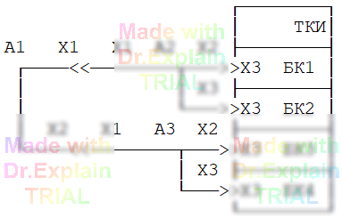

2.6 Команда ЦУ
С помощью команды ЦУ поместим в ПК сообщение оператору о порядке подключения нашего кабеля к АСК:
40 ЦУ Подключите кабель АБВГ.123456.789 согласно рисунку:
A1 — кабель АБВГ.123456.789
A2, A3 — соединительное устройство БВГД.234567.890
После подключения нажмите Enter. ?
Обратите внимание на символ «?» в конце текста команды — он нужен для остановки выполнения ПК после вывода сообщения.